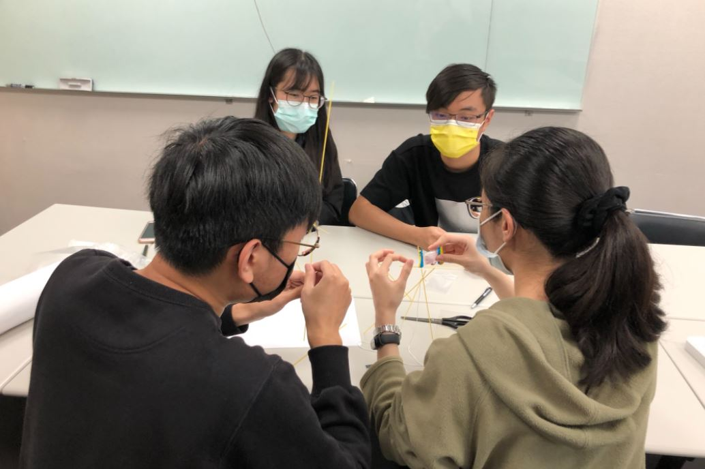

蔡昌佑 Jonathan Tsai
工作環境介紹
我目前是在叡揚公司的協志辦公室工作，一整間工作室只有我們FBU部門與隔壁的網軟公司，在工作時我們用的是公司提供的電腦， 公司在今年決定為每一位新人都發一台全新的筆電，讓新人不用再帶自己的電腦到公司上班，也盡量降低了公司內部資訊外洩的可能性。 上班時間的部分，我們的是透過Excel表來記錄自己的出缺席，所以上班時間算是非常彈性的，幾點上班就寫幾點，公司是規定九點上班六點下班， 中間休息的一小時不算薪水，稍微遲到都是可以允許的，然而當事情做不完之時也可以自主加班，薪水都會照勞基法的算法給予薪水。 員工福利的部分，我們每周一都有免費的咖啡可以喝。工作環境的部分，我們工作室是採半開放式空間，目的是讓我們可以方便的討論， 如果需要開會也有會議室可以開會。公司附近的環境也有一些便當店，更有晴光市場，午餐基本上都可以不用煩惱。
工作詳述
我目前是被分配到公司的FBU部門，是一個專門處理財務管理資訊化的部門，我大部分的時間都是在一個P專案下做事， 職位算是後端程式工程師，寫aspx.vb還有aspx，少部分的時間會寫一些SQL撈資料庫的資料，最主要是幫忙P公司更新他們的系統，他們的系統很舊，所以要幫他們更新。 工作內容大部份時間都是在維護，維護大部分要做的事情就是他們如果對現有的系統有甚麼不滿意的地方，我們就是幫他們改到好為止， 所以作業的程序是他們會開一張需求單，告訴我們他們的需求是什麼，我們再跟他們要必須更改的程式後，在辦公室修改，修改完後再到客戶那邊去安裝， 而這些過程都是我會參與到的，所以在目前實習的這一段時間，我必須會要具備寫程式的能力之外，也要對修改的系統有一定的了解， 更要能在面對客戶提出的疑問時做出解答，甚至幫客戶現場Debug。在P專案底下，其實會學到的東西算是很有限的，因為他們的系統過於老舊， 許多程式的寫法都是以前的方法，而且系統的毛病蠻多的，在幫忙維護P公司系統時，都會有一種考古程式的感覺，看看以前的人程式寫法上會出現怎麼樣的Bug， 順便警惕自己不要犯一樣的錯。在最近大概是五月底的時候，因為P專案的維護大概到一段落了，所以我被調派到FBU部門的另外一個專案，在這專案就是以開發為主了， 都沒有維護的部分，這個專案就是使用很新的架構，因為這是一個最近幾年才開發的專案，而專案的底層還是我們部門新開發的架構， 所以在剛轉到這專案的這幾天我花了很多時間在熟悉那個架構。簡單來說，我們之所以會採用這個架構是為了要標準化新專案的控制項，讓我們寫相同類型的程式時， 都是透過程式自己長出程式，所以請我們部門的系統架構師寫了一套動態Excel，只要在Excel上面照著他們的指示輸入你想要用的控制項， 像是下拉式選單、按鈕或者是Textbox，就可以透過動態的方式在網頁生產出你想要的控制項，接下來就只需要在控制項的背後去撰寫運算邏輯就可以變成客製化的功能了， 第一次接觸了這種東西的時候，真的會很佩服那些系統架構師，可以利用這種動態的方式就長出控制項，但在開始要使用這些動態的東西時，痛苦就開始了， 常常會因為不熟悉底層的架構而浪費很多時間，而且底層的套件是公司內部的系統，在網路上並不會有任何的資料，遇到不懂的只能去問寫底端的工程師， 如果他們沒空可以教你，那真的只能等他們，沒有其他方法。
前半年實習期間完成的進度
在P專案下我目前是完成了一些需求單以及系統升級，需求單的內容就是簡單的更改系統需求， 系統升級的部分就是將他們現有的單機版系統移植到網頁上。後來轉到銀行的專案，因為需要熟悉新的系統，只有做了幾張開發的單子， 內容大概就像是修改原先的運算邏輯，改成客戶需要的方式，就被調回去原本的專案幫忙開發新的系統。
工作當中扮演的角色
在剛進公司的前兩個月，我都算是訓練生的部分，從TTDC的新生訓練再到FBU的訓練，都是經過一套的教學後，再實際演練。 到了FBU之後就變成是後端工程師的部分，後來變成專門修改弱掃的弱點工程師實習生。
叡揚實習生 Team Building 活動花絮
後半年實習期間完成之進度
在暑假期間我大部分時間還是待在舊專案做著維護的工作，客戶系統上有問題，提出需求單就必須要幫忙解決，而暑假期間， 客戶他們有稽查自家內部系統的資安漏洞，因此我幾乎都在處理系統上的資安漏洞，從兩個系統的弱點掃描，再到網路版弱點掃描，最後還有人為攻擊的滲透測試。 從網路上常見的SQL Injection到一些很少見的Log Forging，這些問題都是我有解過的問題，後來解完問題之後接著幫忙開發客戶的新系統，而開發完之後， 也是有一大堆新系統的資安弱點要解決，經過了這個暑假，我從對資安完全不了解的新手，變成現在部門有一些資安的問題都可以提供解答。 我們會找到系統上的資安漏洞大部分都是透過公司購買的一個軟體來進行掃描，掃描之後會產生一個弱點報告，報告裡面會提供系統上有哪些弱點，以及錯誤的地方， 還有建議的修改方式，所以有一些錯誤是可以直接用他建議的方法修改，但有一些弱點是因為弱掃軟體設計問題所衍生的，我們系統並沒有這些問題， 因此要修改要先猜測軟體判斷出弱點的原因，再針對他的判斷邏輯來修改程式來讓軟體判斷不出來有弱點，或者是有一些問題我們會寫文件跟客戶說明這個弱點屬於軟體誤判， 所以在解決弱掃問題的時候不僅是要能了解資安漏洞，也要可以依據對自家系統的了解判斷是不是弱掃軟體誤判，更需要跟客戶溝通的能力， 讓客戶了解我們為什麼會採取這樣的解決方法。在學習這些能力時，對我來說最痛苦的應該就是剛開始了解資安漏洞的時候， 在什麼都不會的時候看到要解決的弱掃報告上有一百多個弱點，十幾種弱點要解決，那份無力感讓我至今難忘。在解弱點時，我都習慣先從中高風險的問題開始解， 因為那些比較容易在網路上找到答案的，拜Google大神所賜，網路上找到的答案幾乎都可以直接用，相當的方便，真正麻煩的反而是那些低風險的問題，就如同前面所說的， 要了解弱掃軟體的判斷邏輯才能解決這些問題，有時候真的摸不著，還需要去問我們公司的技術經理，遇過最誇張的一次是為了解決三種弱點，我花了將近一個禮拜， 才真的學會要怎麼解決那些問題。而在解決了那些問題之後，部門也為了提高效率，指派了許多新系統的弱掃問題給我解。每一次接觸到新的系統都是一份新的挑戰 ，每個系統所使用的架構不同，修補起來也會遇到不一樣的問題，過程中的我也只好不斷的學習，真的是獲益良多。